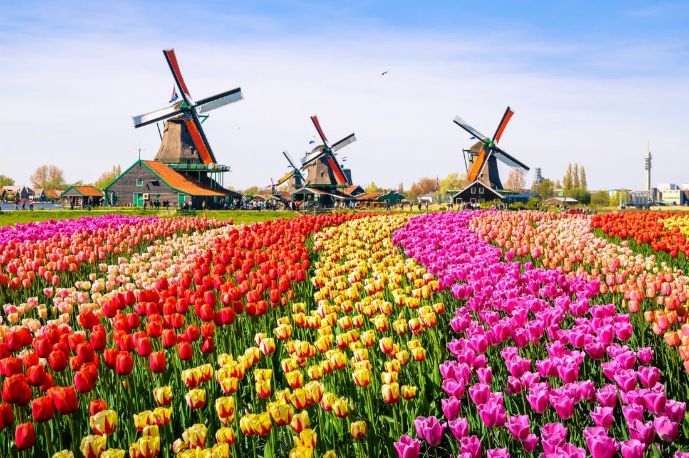
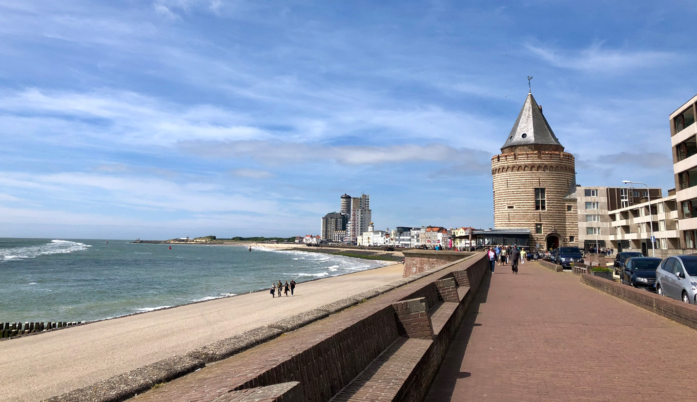
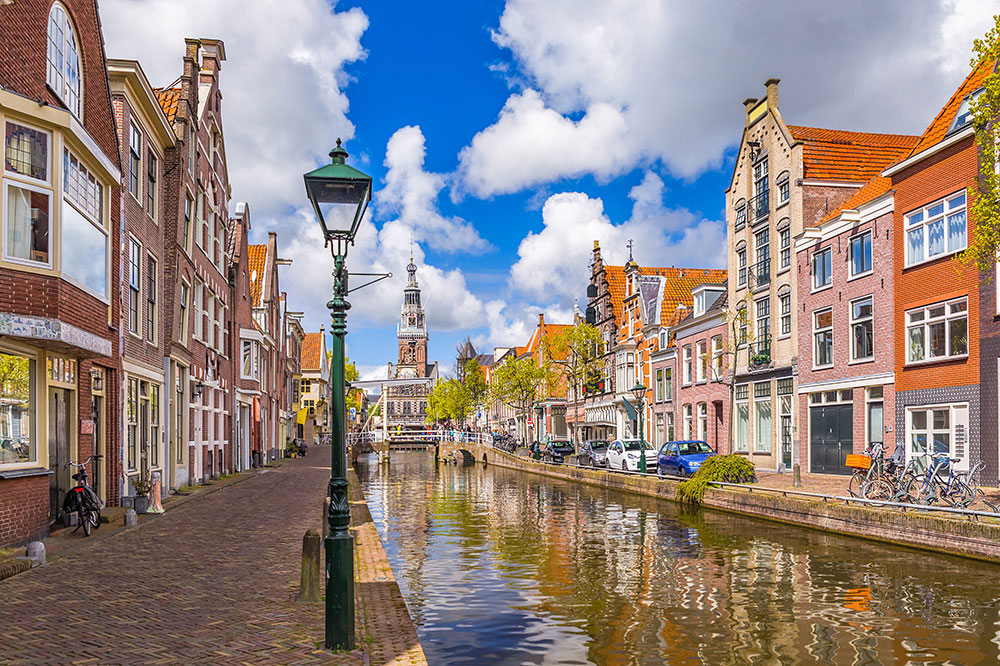
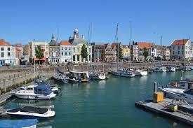
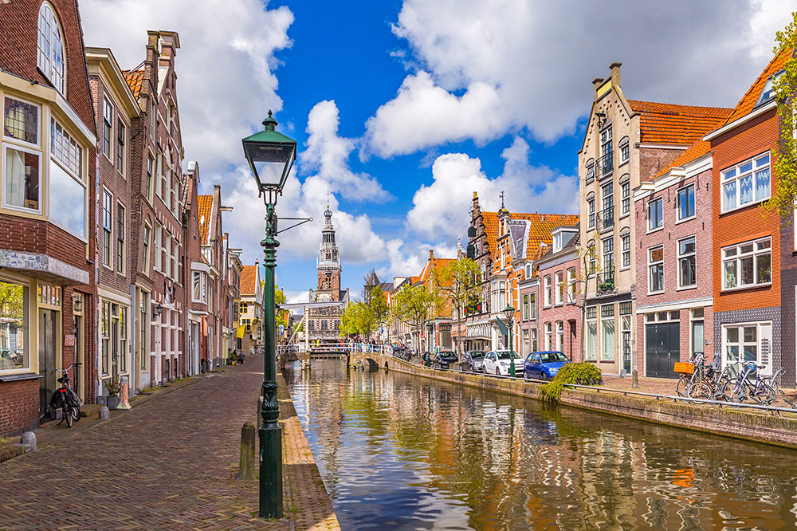
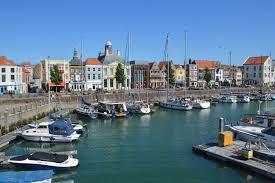

The study programme suits my personality because:
The HBO level suits me because:
I chose the Netherlands because:
-
One of the happiest country
✅
-
Excellent education-system
✅
-
Almost everyone speaks English
✅
-
Cycling is possible almost everywhere
✅
 


